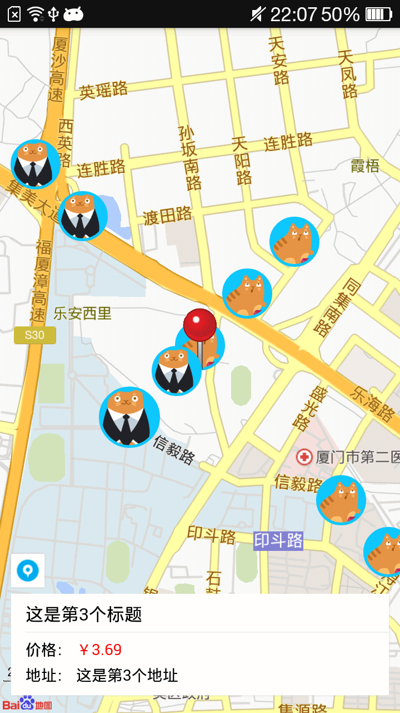

啦啦啦╭(′▽`)╭(′▽`)╯蜗牛君来也，今天呢要出一篇案例实现的博文，就是仿支付宝的到位功能，主要是利用DCloud公司的HTML5+技术（文档看这里→http://www.html5plus.org/doc/h5p.html），而我们只需懂得HTML5即可实现。
不多说先看效果图↓，demo代码戳这里https://github.com/LonelyWalker78/daowei

准备工作
1、所需开发工具：HBuilder，通过HTML5使用DCloud提供HTML5+来实现一些原生功能，最终打包成APP。
2、我们来梳理下“到位”功能的实现流程：
（1）首先最最重要的当然是我们的地图功能啦，没有地图谈何到位(/ □ \)；
（2）图片Icon的下载与Marker更新；
（3）滑动卡片的显示与切换效果。
一、地图功能：
这里我使用的是百度地图，但不是百度地图提供的js版本，而是DCloud在HTML5+中提供的Maps模块（集成了百度地图）。
既然要使用百度地图，那首先肯定是要得到百度的同意啦，也就是你要找百度拿到一个key，而要拿到key你就要在百度地图API上注册为开发者，然后你就可以创建一个应用，然后选Android类型输入应用名啥的，然后你就有了一个key，没错就是这么简单！（来点废话酝酿情绪^_^）
1、添加“定位当前”按钮
有了地图之后，首先我们来在地图上添加一个“定位当前”的按钮；这里有一点说明一下些，由于Maps模块是原生控件，意味着在页面中层级最高，所以在页面中即使给div或其他标签设置再高的层级，也是会被地图覆盖在下面，所以只能采用新建一个透明页面在地图之上，然后透明页面中放置定位按钮的方法，如下。
function createLocationSubview() {
if(locationSub != null) {
return
}
ocationSub = plus.webview.create('maps-location-sub.html', 'maps-location-sub.html', {
bottom: '10px',
height: '36px',
width: '46px',
position: 'absolute',
scrollIndicator: 'none',
background: 'transparent'
});
plus.webview.currentWebview().append(locationSub);
};
如图所示
2、“定位当前”按钮的点击事件
通过map.getUserLocation获取当前位置的经纬度信息，然后调用map.centerAndZoom(pos, 16)在地图上定位到当前位置；可能看代码你会注意到这里还有个定位图标下移操作，就是当在地图上显示滑动卡片信息时，定位图标会被顶上去，当我们重新定位当前时，需要隐藏滑动卡片信息，这时自然要将定位图标重新移动到右下角了。
/*定位到当前位置按钮触发的事件*/
function relocation() {
//获取用户的当前位置信息
map.getUserLocation(function(state, pos) {
if(0 == state) {
var sub = plus.webview.getWebviewById('maps_map_sub.html');
if(sub) {
sub.hide();
if(locationSub == null) {
locationSub = plus.webview.getWebviewById('maps-location-sub.html')
}
//定位图标下移
locationSub.setStyle({
bottom: '10px'
});
}
clearMarker();
map.centerAndZoom(pos, 16);
//创建定位针
createMarker(pos.getLng(), pos.getLat());
currentPoint = pos;
loadCommodityList(pos.getLng(), pos.getLat());
}
});
};
createMarker(pos.getLng(), pos.getLat())用于在地图上的当前位置显示定位针，loadCommodityList(pos.getLng(), pos.getLat())用于在地图上加载出附件的商品信息，这个后面再进行解释。
到这里，我们的地图的基本功能就已经实现啦，接下来我们看第二部分。
二、图片Icon的下载与Marker更新：
1、图片Icon的下载
其实就是将一张网络图片转化成一大一小两张图片保持在本地的功能，鉴于这部分功能较为复杂，所以我决定单独整理出一篇文章来进行说明，详情猛戳这里。
2、Marker更新
先上代码。
//在地图上加载附近的商品
function loadCommodityList(lng, lat) {
//这里的goodsInfo我使用的是本地模拟JSON数据，实际应用中该数据应该是从服务器获取到的
//取出json数据并根据经纬度在地图上添加标志物
for(var i = 0; i < goodsInfo.length; i++) {
var marker = new plus.maps.Marker(new plus.maps.Point(goodsInfo[i].lng, goodsInfo[i].lat));
marker.setIcon("images/head.png"); //先设置一张透明的图片，防止图片还没下载到本地时地图上出现小红点
var image_url = goodsInfo[i].img;
snail.loadIcon(marker, image_url, false);
map.addOverlay(marker);
markerClick(marker, goodsInfo[i].itemId, goodsInfo[i].title, goodsInfo[i].price, goodsInfo[i].address, image_url);
markers.push(marker);
n++;
}
};
</script>
snail.loadIcon(marker, image_url, false)就是上面提到的图片下载方法，将image_url对应的图片保存在本地，然后将保存的本地图片设置到传入的marker中，第三个参数表示当前要在地图上显示的图片是大图还是小图，最终通过map.addOverlay(marker)方法在地图上显示出来；markerClick就是为每个marker绑定点击事件，当用户点击地图上的图片时，图片进行相应的变大缩小，同时还在地图的下方显示滑动卡片信息，具体的就不再细说了，感兴趣的可以在文章开头点击链接查看代码，也可以点这里。
三、滑动卡片的显示与切换效果：
由于避免重复造轮子（也确实是自己能力有限），我这里使用的是Swiper进行滑动切换卡片的。
滑动切换显示区域的实现跟第一点的“添加定位当前按钮”一样，也是在地图下方创建一个透明的窗口来放置卡片进行滑动。然后需要实现的是点击地图上的图片，滑动到相对应的卡片信息并显示，以及滑动卡片时，地图上的图片进行相应的放大缩小。
1、点击地图上的图片，滑动到对应的卡片：
点击图片时，需要将该图片放大，同时显示滑动卡片的窗口且将“定位按钮”上移。我是通过每一个商品都有一个唯一的itemId来进行标识选中的是哪个商品，代码很简单。
if (index == 0) {
swiper.slideTo(1, 0, false);
swiper.slidePrev(false, 0);
} else {
swiper.slideTo(index, 0, false);
}
这里直接使用swiper的slideTo方法即可直接滑动到对应的卡片，但是遇到个问题是swiper.slideTo(0, 0, false)并不能直接滑动到第一张卡片（我也不清楚是为什么，希望知道原因的伙伴能给我解解惑，万分感谢！），所以这里我只好先滑动到第二张图片，然后再调用swiper.slidePrev(false, 0)方法向前滑动一张。
2、滑动卡片，地图上的图片进行相应的放大缩小：
/*滑动商品详情时，在地图放大对应的商品图片*/
function changeSlider(index, image_url) {
if(clickMarker != null && clickIconUrl) {
//将之前选中的放大图标变为正常图标
snail.loadIcon(clickMarker, clickIconUrl, false);
}
//记录当前放大的标志物与其图片地址
clickMarker = markers[index];
clickIconUrl = image_url;
//将当前选中的正常图标变为放大图标
snail.loadIcon(clickMarker, clickIconUrl, true);
//覆盖物显示到最上层
clickMarker.bringToTop();
};
四、补充：
到最后功能也实现得差不多了，不过还有样东西也是必不可少的，那就是地图状态的监听处理，没有这个那地图可就成了静态的地图了。
//获取用户的当前位置信息
map.getUserLocation(function(state, pos) {
if(0 == state) {
map.centerAndZoom(pos, 16);
createMarker(pos.getLng(), pos.getLat());
currentPoint = pos;
loadCommodityList(pos.getLng(), pos.getLat());
}
});
//用户点击地图事件
map.onclick = function(point) {
var sub = plus.webview.getWebviewById('maps_map_sub.html');
if(sub) {
sub.hide();
if(locationSub == null) {
locationSub = plus.webview.getWebviewById('maps-location-sub.html')
}
//定位图标下移
locationSub.setStyle({
bottom: '10px'
});
if(clickMarker != null && clickIconUrl) {
//将选中的放大图标变为正常图标
snail.loadIcon(clickMarker, clickIconUrl, false);
}
}
}
//地图状态变化监听事件
map.onstatuschanged = function(e) {
var pt1 = new plus.maps.Point(e.center.longitude, e.center.latitude);
currentPoint = pt1;
map.setCenter(pt1, 16); //设置地图的中心点
clearMarker();
//创建定位针
createMarker(pt1.getLng(), pt1.getLat());
//加载附近的出租屏
loadCommodityList(pt1.getLng(), pt1.getLat());
}
完结：
再次放上demo代码地址：戳这里https://github.com/LonelyWalker78/daowei
个人GitHub地址：戳这里https://github.com/LonelyWalker78